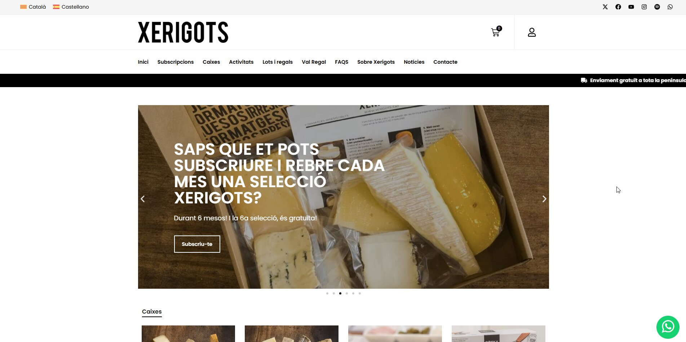
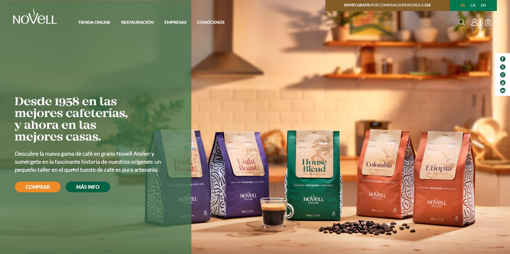
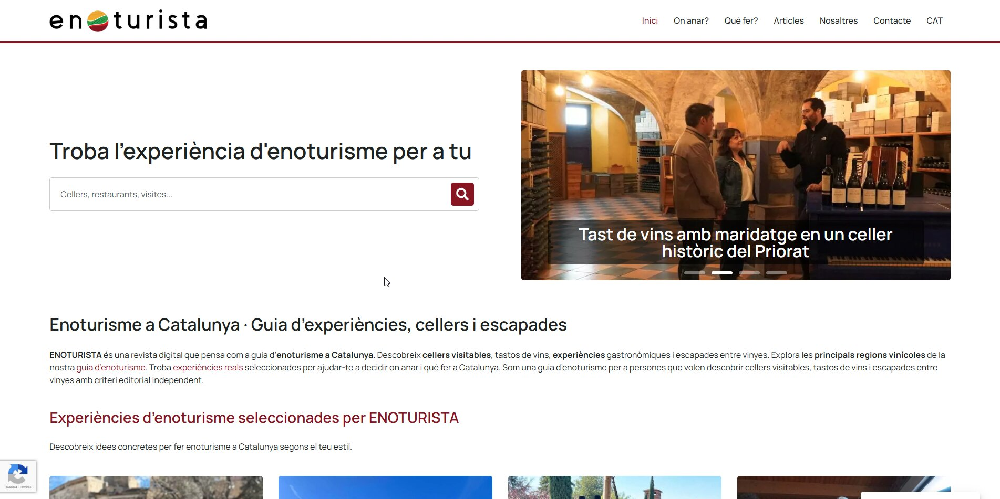
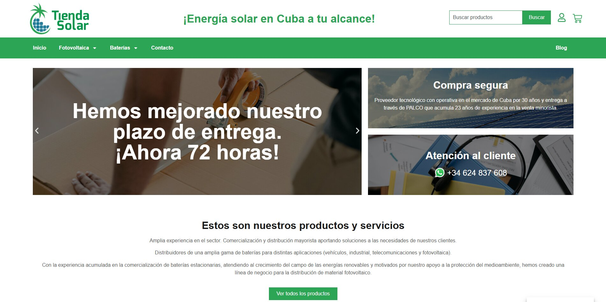

Experiencia Profesional
Arcas Ollé
Visitar
Tienda Xerigots
Visitar
Cafés Novell
Visitar
Enoturista
VisitarMSF Humanidad Inconformista
VisitarMSF Tarjetas Detalle
Visitar
Som Prematurs Formación
Visitar
Tienda Solar
VisitarXTA
VisitarEstos proyectos son solo una selección representativa. A lo largo de mi carrera he desarrollado y mantenido múltiples soluciones para diversos clientes que, por motivos de confidencialidad o volumen, no se listan aquí.